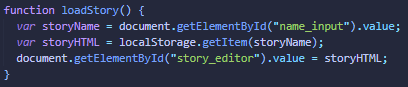
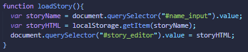

Week 1
Notes
Something that really captured my attention was about to work always
first in the mobile version and then move forward into the other size
for the web application. It is really important that we create a web
app that shows everything in a beautiful way without taking a lot of
time loading the web app. Talking about the first exercise, it was
really helpful, I liked how can you feel that you are having a
conversation when reading the exercise.
The code in the first exercise was really good. I liked a lot the
story editor with localstorage, I'm still having issues working and
understanding localstorage but I hope I'll get better soon! Something
that I realized is that they used "document.GetElementById" but I
prefer to use "document.querySelector" because I think is a better
option to manipulate the DOM.
For example, this is a extract of the code in the activity:
and I did mine like this:
Questions
I had never thought about this before, what is the difference between a website and a web application?